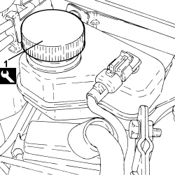
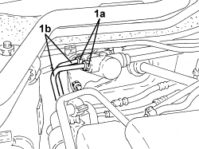
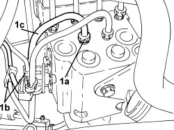

3340B53 RIGID PIPE (ONE) FROM MASTER CYLINDER (PUMP) TO ABS HYDRAULIC CONTROL UNIT - R.R. FOR RIGHT HAND DRIVE VERSIONS
- Path
- Procedures > 33 BRAKES > 3340 ANTI-LOCK BRAKING SYSTEM (ABS) > 3340B ABS SYSTEM PIPES > 3340B53 RIGID PIPE (ONE) FROM MASTER CYLINDER (PUMP) TO ABS HYDRAULIC CONTROL UNIT - R.R. FOR RIGHT HAND DRIVE VERSIONS
- Kind
- repair procedure (removal / refitting; the operation number is the code)
- Applies to
- engines: 1.9 JTS, 2.2 JTS; all production periods
- Interactive page
- https://sloeber94.github.io/elrnDB/alfa/159/en/#/939005785
Applies to: engines: 1.9 JTS, 2.2 JTS; all production periods
 Removing
Removing
 Refitting
RefittingOp. 1016A10 SOUND-PROOFING COVER - R.R
1. Replace the brake-clutch fluid reservoir plug using the tool.
Tool | Description | Function | Validity |
|---|---|---|---|
2000001400 | Plug | Brake-clutch fluid reservoir cap |

Applies to: engines: 1.9 JTS, 2.2 JTS; all production periods
- Unscrew the engine coolant reservoir fixing nuts and move it aside.
1. Undo the connectors (1a) for the rigid pipes (1b) from the brake pump.
- Open the retaining clips for the rigid pipes from the brake pump to the A.B.S. hydraulic control unit.

Applies to: engines: 1.9 JTS, 2.2 JTS; all production periods
1. Undo the connector (1a), open the retaining clips (1b) and remove the rigid pipe (1c) from the A.B.S. hydraulic control unit.

Applies to: engines: 1.9 JTS, 2.2 JTS; all production periods
Refitting
Removing- Place the rigid pipe in position, close the retaining clips and tighten the connector connected to the A.B.S. control unit.
Component | Fastening | dia | Value (daNm) | Validity |
|---|---|---|---|---|
Brake pipe connectors | Connector | M10/M12 | 1.4 ÷ 1.8 |
- Tighten the connectors for the rigid pipes from the A.B.S. control unit to the brake pump, brake pump side to the recommended torque.
Component | Fastening | dia | Value (daNm) | Validity |
|---|---|---|---|---|
Brake pipe connectors | Connector | M10/M12 | 1.4 ÷ 1.8 |
- Close the retaining clips for the rigid pipes from the brake pump to the A.B.S. hydraulic control unit.
- Place the engine coolant supply reservoir back in its housing and secure it using the nuts.
Op. 1016A10 SOUND-PROOFING COVER - R.R
Op. 0010T64 BRAKE AND/OR CLUTCH FLUID CHECK LEVEL AND TOP UP AS NECESSARY